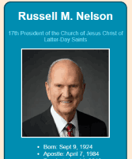
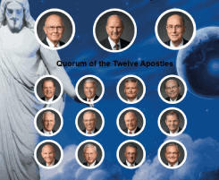
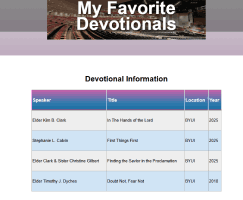
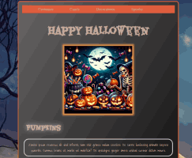
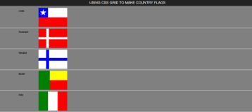
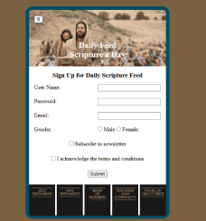

In this assignment we had to create an infographic about President Nelson. I learned how to center elements within a web page.

The purpose of this assignment was to create an infographic that included that Quorum of Twelve Apostles and the First Presidency. Within this assignment, I learned how to manipulate images using CSS, and how to insert and manipulate a background image.

This assignmemnt required me to learn how to use a table and a form. Within the table, I had to input information about my favorite devotional. The form was created to allow users to input information about their favorite devotional so that it can be added to the table.

Throughout this project I was able to explore the some effects that can be added to a web page using CSS. The infographic was Halloween themed so I included text shadows, skewing, and scaling to create spooky effects.

In this assignment I became familiar with grid and how to use it to arrange elements. Using grids, I was able to create flags for several countries such as C.A.R., Benin, and Denmark.

In this assignment, I was able to improve my grid skills and learned how to position various elements through different activities. I was learned how to use z-index and float properities.

In this assignment, I was able to combine various skills I had learned and put them into practice. I also got better at positioning items.